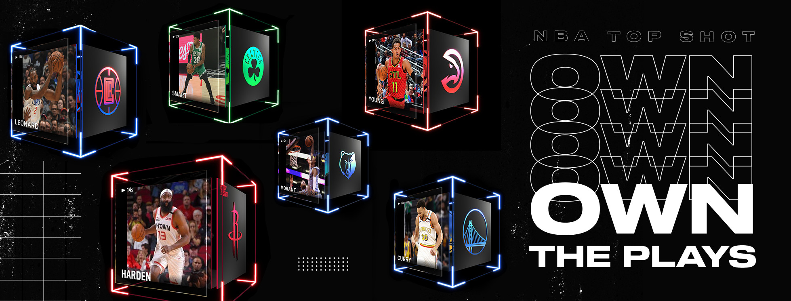

Buy a Moment
Everything you need to know to get started on NBA TopShot and buy your first Moment.
1. Create an Account with Dapper Labs
Unlike traditional trading cards, TopShot collectibles are stored on the Flow blockchain, which was built by Dapper Labs.
To get started, you'll need to register for NBA TopShot with Dapper. This is done by clicking sign-up on the TopShot website. By creating a Dapper account, you get a wallet that stores funds thus enabling you to buy and sell crypto collectibles.
Registering for Dapper is easy and straightforward. You simply sign in via Google or email, then provide your telephone number and verify it.
2. Getting Started with NBA TopShot
After registering with Dapper, you can use the account to sign into TopShot.
The first time you sign in, a couple of introductory videos will greet you, followed by an invitation to the TopShot Discord Channel. Then you'll be able to select your favourite team.
I suggest joining the Discord channel as it is both helpful and a fun way to connect with other collectors. The Discord Channel has announcements regarding challenges, drops, events, and blog posts. You can also chat with other collectors on the site.
Once you're in, you will get a randomly generated username. Mine is earnest_tree_frog9342. You can easily change the username by clicking on your profile, then clicking "Edit Profile". You can also edit your favourite team here. I happen to like my randomly generated username, so I didn't change it. My friend, on the other hand, changed his to frostRaptor.
You can now explore the packs on offer and the marketplace where you can buy the Moments second hand. But in order to buy anything, you'll need some funds first.
3. Loading Funds into your Account
To buy a Moment, there needs to be some funds in your Dapper account.
You can load up your account by going to "Payment and Payouts" on the site. Here, you can choose how much you want to deposit into your account. You can either load up and pay with a credit card, or with cryptocurrency. Dapper accepts Bitcoin, Ethereum, Bitcoin Cash and two stablecoins: DAI and USDC
You may need to wait for your funds to land in your wallet before they're ready to spend - cryptocurrencies in particular can be a bit slow sometimes. Note that there are also network fees when making a cryptocurrecy transaction (e.g., Bitcoin fees are roughly $13 per transaction at the moment).
4. Buying a Moment from the Marketplace
The marketplace contains thousands of Top Shot moments. You can filter the list to find moments for specific teams or players, or from specific packs. You can also rank the moments by price and rarity.
To purchase a moment, you simply find the moment you like and select the serial number of the specific card. There is a serial number since there is only a limited amount of NFTs minted for that moment. Then you click "Purchase and Pay" with the funds in your Dapper account.
After that, you own the moment! You can store it and watch it whenever you want, you can put them up for sale (for a profit sometimes), or gift them to a friend. You've officially collected and owned your first NBA TopShot NFT.